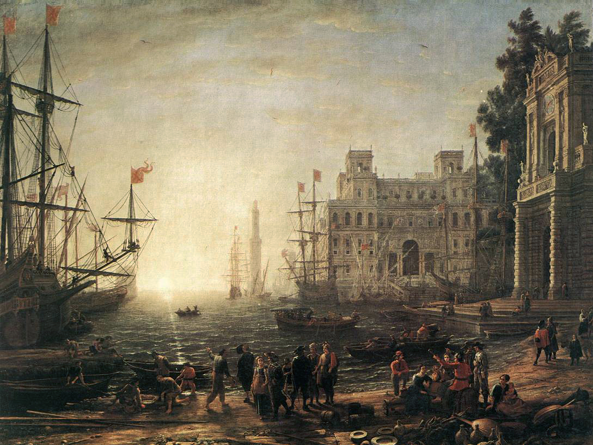

Oolook: Style for org-mode
What is Oolook?
What is org-mode?
Org-mode is an extension for the Emacs editor that provides note-taking functionality. With features such as code blocks and spreadsheet functionality, it is a very powerful way to write text documents. Org-mode also provides a function to export org files to HTML, with which you can write simple web pages.
What does Oolook look like?
You're looking at it right now! See How to use Oolook below.
Org-mode tables
Tables are a great feature of org-mode!
| Item | duration (min) | starting (time AM) |
|---|---|---|
| Presentation by the candidate | 20 | 8:30 |
| Presentation Questions | 10 | 08:50 |
| Break | 15 | 09:00 |
| Main interview | 90 | 09:15 |
| Break | 15 | 10:45 |
| HR Interview | 60 | 11:00 |
| optional Lunch / Coffee | 60 | 12:00 |
| optional interview | 30 | 13:00 |
Image with caption
This shows how to embed an image file with a caption.

Figure 1: Port Scene with the Villa Medici
Code block example
This code demonstrates how to draw a graph with Python and Matplotlib and then display it in org-mode.
import numpy as np import matplotlib.pyplot as plt import matplotlib as mpl mpl.rcParams['figure.dpi'] = 300 plt.axis('off') for x in range(0, 6): plt.plot(np.cos(np.arange(0, 4 * np.pi, 0.01) + x/2)) plt.savefig("example.png", bbox_inches='tight', pad_inches=0)
Figure 2: Some sine waves from matplotlib
How to use Oolook
Download or git clone the Oolook repo
git clone https://github.com/dvolk/oolook
Add Oolook to your org file
Put the following on the top of your org file:
#+OPTIONS: html-style:nil #+OPTIONS: num:nil #+OPTIONS: toc:nil #+HTML_HEAD: <link rel="stylesheet" type="text/css" href="oolook/oolook.css" /> #+HTML_HEAD: <link rel="stylesheet" type="text/css" href="https://cdnjs.cloudflare.com/ajax/libs/font-awesome/6.2.0/css/all.min.css" /> #+HTML_HEAD: <script src="oolook/jquery-3.x-git.min.js"></script> #+HTML_HEAD: <script src="oolook/oolook.js"></script>
Export your org file to HTML
Press C-c C-e h h to export an org file to HTML.
Excerpt from Scaramouche
The following is chapter 1 of Scaramouche. It's here to demonstrate the column layout, but it's also a pretty good book.
He was born with a gift of laughter and a sense that the world was mad. And that was all his patrimony. His very paternity was obscure, although the village of Gavrillac had long since dispelled the cloud of mystery that hung about it. Those simple Brittany folk were not so simple as to be deceived by a pretended relationship which did not even possess the virtue of originality. When a nobleman, for no apparent reason, announces himself the godfather of an infant fetched no man knew whence, and thereafter cares for the lad's rearing and education, the most unsophisticated of country folk perfectly understand the situation. And so the good people of Gavrillac permitted themselves no illusions on the score of the real relationship between André-Louis Moreau—as the lad had been named—and Quintin de Kercadiou, Lord of Gavrillac, who dwelt in the big grey house that dominated from its eminence the village clustering below.
André-Louis had learnt his letters at the village school, lodged the while with old Rabouillet, the attorney, who in the capacity of fiscal intendant, looked after the affairs of M. de Kercadiou. Thereafter, at the age of fifteen, he had been packed off to Paris, to the Lycée of Louis Le Grand, to study the law which he was now returned to practise in conjunction with Rabouillet. All this at the charges of his godfather, M. de Kercadiou, who by placing him once more under the tutelage of Rabouillet would seem thereby quite clearly to be making provision for his future.
André-Louis, on his side, had made the most of his opportunities. You behold him at the age of four-and-twenty stuffed with learning enough to produce an intellectual indigestion in an ordinary mind. Out of his zestful study of Man, from Thucydides to the Encyclopædists, from Seneca to Rousseau, he had confirmed into an unassailable conviction his earliest conscious impressions of the general insanity of his own species. Nor can I discover that anything in his eventful life ever afterwards caused him to waver in that opinion.
In body he was a slight wisp of a fellow, scarcely above middle height, with a lean, astute countenance, prominent of nose and cheek-bones, and with lank, black hair that reached almost to his shoulders. His mouth was long, thin-lipped, and humorous. He was only just redeemed from ugliness by the splendour of a pair of ever-questing, luminous eyes, so dark as to be almost black. Of the whimsical quality of his mind and his rare gift of graceful expression, his writings — unfortunately but too scanty—and particularly his Confessions, afford us very ample evidence. Of his gift of oratory he was hardly conscious yet, although he had already achieved a certain fame for it in the Literary Chamber of Rennes—one of those clubs by now ubiquitous in the land, in which the intellectual youth of France foregathered to study and discuss the new philosophies that were permeating social life. But the fame he had acquired there was hardly enviable. He was too impish, too caustic, too much disposed—so thought his colleagues—to ridicule their sublime theories for the regeneration of mankind. Himself he protested that he merely held them up to the mirror of truth, and that it was not his fault if when reflected there they looked ridiculous.
All that he achieved by this was to exasperate; and his expulsion from a society grown mistrustful of him must already have followed but for his friend, Philippe de Vilmorin, a divinity student of Rennes, who, himself, was one of the most popular members of the Literary Chamber.
Coming to Gavrillac on a November morning, laden with news of the political storms which were then gathering over France, Philippe found in that sleepy Breton village matter to quicken his already lively indignation. A peasant of Gavrillac, named Mabey, had been shot dead that morning in the woods of Meupont, across the river, by a gamekeeper of the Marquis de La Tour d'Azyr. The unfortunate fellow had been caught in the act of taking a pheasant from a snare, and the gamekeeper had acted under explicit orders from his master.
Infuriated by an act of tyranny so absolute and merciless, M. de Vilmorin proposed to lay the matter before M. de Kercadiou. Mabey was a vassal of Gavrillac, and Vilmorin hoped to move the Lord of Gavrillac to demand at least some measure of reparation for the widow and the three orphans which that brutal deed had made.
But because André-Louis was Philippe's dearest friend—indeed, his almost brother—the young seminarist sought him out in the first instance. He found him at breakfast alone in the long, low-ceilinged, white-panelled dining-room at Rabouillet's—the only home that André-Louis had ever known—and after embracing him, deafened him with his denunciation of M. de La Tour d'Azyr.
"I have heard of it already," said André-Louis.
"You speak as if the thing had not surprised you," his friend reproached him.
"Nothing beastly can surprise me when done by a beast. And La Tour d'Azyr is a beast, as all the world knows. The more fool Mabey for stealing his pheasants. He should have stolen somebody else's."
Figure 3: Pheasant.jpg. source: wikipedia
"Is that all you have to say about it?"
"What more is there to say? I've a practical mind, I hope."
"What more there is to say I propose to say to your godfather, M. de Kercadiou. I shall appeal to him for justice."
"Against M. de La Tour d'Azyr?" André-Louis raised his eyebrows.
"Why not?"
"My dear ingenuous Philippe, dog doesn't eat dog."
"You are unjust to your godfather. He is a humane man."
"Oh, as humane as you please. But this isn't a question of humanity. It's a question of game-laws."
M. de Vilmorin tossed his long arms to Heaven in disgust. He was a tall, slender young gentleman, a year or two younger than André-Louis. He was very soberly dressed in black, as became a seminarist, with white bands at wrists and throat and silver buckles to his shoes. His neatly clubbed brown hair was innocent of powder.
"You talk like a lawyer," he exploded.
"Naturally. But don't waste anger on me on that account. Tell me what you want me to do."
"I want you to come to M. de Kercadiou with me, and to use your influence to obtain justice. I suppose I am asking too much."
"My dear Philippe, I exist to serve you. I warn you that it is a futile quest; but give me leave to finish my breakfast, and I am at your orders."
M. de Vilmorin dropped into a winged armchair by the well-swept hearth, on which a piled-up fire of pine logs was burning cheerily. And whilst he waited now he gave his friend the latest news of the events in Rennes. Young, ardent, enthusiastic, and inspired by Utopian ideals, he passionately denounced the rebellious attitude of the privileged.
André-Louis, already fully aware of the trend of feeling in the ranks of an order in whose deliberations he took part as the representative of a nobleman, was not at all surprised by what he heard. M. de Vilmorin found it exasperating that his friend should apparently decline to share his own indignation.
"Don't you see what it means?" he cried. "The nobles, by disobeying the King, are striking at the very foundations of the throne. Don't they perceive that their very existence depends upon it; that if the throne falls over, it is they who stand nearest to it who will be crushed? Don't they see that?"
"Evidently not. They are just governing classes, and I never heard of governing classes that had eyes for anything but their own profit."
"That is our grievance. That is what we are going to change."
"You are going to abolish governing classes? An interesting experiment. I believe it was the original plan of creation, and it might have succeeded but for Cain."
"What we are going to do," said M. de Vilmorin, curbing his exasperation, "is to transfer the government to other hands."
"And you think that will make a difference?"
"I know it will."
"Ah! I take it that being now in minor orders, you already possess the confidence of the Almighty. He will have confided to you His intention of changing the pattern of mankind."
M. de Vilmorin's fine ascetic face grew overcast.
"You are profane, André," he reproved his friend.
"I assure you that I am quite serious. To do what you imply would require nothing short of divine intervention. You must change man, not systems. Can you and our vapouring friends of the Literary Chamber of Rennes, or any other learned society of France, devise a system of government that has never yet been tried? Surely not. And can they say of any system tried that it proved other than a failure in the end? My dear Philippe, the future is to be read with certainty only in the past. Ab actu ad posse valet consecutio. Man never changes. He is always greedy, always acquisitive, always vile. I am speaking of Man in the bulk."
"Do you pretend that it is impossible to ameliorate the lot of the people?" M. de Vilmorin challenged him.
"When you say the people you mean, of course, the populace. Will you abolish it? That is the only way to ameliorate its lot, for as long as it remains populace its lot will be damnation."
"You argue, of course, for the side that employs you. That is natural, I suppose." M. de Vilmorin spoke between sorrow and indignation.
"On the contrary, I seek to argue with absolute detachment. Let us test these ideas of yours. To what form of government do you aspire? A republic, it is to be inferred from what you have said. Well, you have it already. France in reality is a republic to-day."
Philippe stared at him. "You are being paradoxical, I think. What of the King?"
"The King? All the world knows there has been no king in France since Louis XIV. There is an obese gentleman at Versailles who wears the crown, but the very news you bring shows for how little he really counts. It is the nobles and clergy who sit in the high places, with the people of France harnessed under their feet, who are the real rulers. That is why I say that France is a republic; she is a republic built on the best pattern—the Roman pattern. Then, as now, there were great patrician families in luxury, preserving for themselves power and wealth, and what else is accounted worth possessing; and there was the populace crushed and groaning, sweating, bleeding, starving, and perishing in the Roman kennels. That was a republic; the mightiest we have seen."
Philippe strove with his impatience. "At least you will admit—you have, in fact, admitted it—that we could not be worse governed than we are?"
"That is not the point. The point is should we be better governed if we replaced the present ruling class by another? Without some guarantee of that I should be the last to lift a finger to effect a change. And what guarantees can you give? What is the class that aims at government? I will tell you. The bourgeoisie."
"What?"
"That startles you, eh? Truth is so often disconcerting. You hadn't thought of it? Well, think of it now. Look well into this Nantes manifesto. Who are the authors of it?"
"I can tell you who it was constrained the municipality of Nantes to send it to the King. Some ten thousand workmen—shipwrights, weavers, labourers, and artisans of every kind."
"Stimulated to it, driven to it, by their employers, the wealthy traders and shipowners of that city," André-Louis replied. "I have a habit of observing things at close quarters, which is why our colleagues of the Literary Chamber dislike me so cordially in debate. Where I delve they but skim. Behind those labourers and artisans of Nantes, counselling them, urging on these poor, stupid, ignorant toilers to shed their blood in pursuit of the will o' the wisp of freedom, are the sail-makers, the spinners, the ship-owners and the slave-traders. The slave-traders! The men who live and grow rich by a traffic in human flesh and blood in the colonies, are conducting at home a campaign in the sacred name of liberty! Don't you see that the whole movement is a movement of hucksters and traders and peddling vassals swollen by wealth into envy of the power that lies in birth alone? The money-changers in Paris who hold the bonds in the national debt, seeing the parlous financial condition of the State, tremble at the thought that it may lie in the power of a single man to cancel the debt by bankruptcy. To secure themselves they are burrowing underground to overthrow a state and build upon its ruins a new one in which they shall be the masters. And to accomplish this they inflame the people. Already in Dauphiny we have seen blood run like water—the blood of the populace, always the blood of the populace. Now in Brittany we may see the like. And if in the end the new ideas prevail? if the seigneurial rule is overthrown, what then? You will have exchanged an aristocracy for a plutocracy. Is that worth while? Do you think that under money-changers and slave-traders and men who have waxed rich in other ways by the ignoble arts of buying and selling, the lot of the people will be any better than under their priests and nobles? Has it ever occurred to you, Philippe, what it is that makes the rule of the nobles so intolerable? Acquisitiveness. Acquisitiveness is the curse of mankind. And shall you expect less acquisitiveness in men who have built themselves up by acquisitiveness? Oh, I am ready to admit that the present government is execrable, unjust, tyrannical—what you will; but I beg you to look ahead, and to see that the government for which it is aimed at exchanging it may be infinitely worse."
Philippe sat thoughtful a moment. Then he returned to the attack.
"You do not speak of the abuses, the horrible, intolerable abuses of power under which we labour at present."
"Where there is power there will always be the abuse of it."
"Not if the tenure of power is dependent upon its equitable administration."
"The tenure of power is power. We cannot dictate to those who hold it."
"The people can—the people in its might."
"Again I ask you, when you say the people do you mean the populace? You do. What power can the populace wield? It can run wild. It can burn and slay for a time. But enduring power it cannot wield, because power demands qualities which the populace does not possess, or it would not be populace. The inevitable, tragic corollary of civilization is populace. For the rest, abuses can be corrected by equity; and equity, if it is not found in the enlightened, is not to be found at all. M. Necker is to set about correcting abuses, and limiting privileges. That is decided. To that end the States General are to assemble."
"And a promising beginning we have made in Brittany, as Heaven hears me!" cried Philippe.
"Pooh! That is nothing. Naturally the nobles will not yield without a struggle. It is a futile and ridiculous struggle—but then… it is human nature, I suppose, to be futile and ridiculous."
M. de Vilmorin became witheringly sarcastic. " Probably you will also qualify the shooting of Mabey as futile and ridiculous. I should even be prepared to hear you argue in defence of the Marquis de La Tour d'Azyr that his gamekeeper was merciful in shooting Mabey, since the alternative would have been a life-sentence to the galleys."
André-Louis drank the remainder of his chocolate; set down his cup, and pushed back his chair, his breakfast done.
"I confess that I have not your big charity, my dear Philippe. I am touched by Mabey's fate. But, having conquered the shock of this news to my emotions, I do not forget that, after all, Mabey was thieving when he met his death."
M. de Vilmorin heaved himself up in his indignation.
"That is the point of view to be expected in one who is the assistant fiscal intendant of a nobleman, and the delegate of a nobleman to the States of Brittany."
"Philippe, is that just? You are angry with me!" he cried, in real solicitude.
"I am hurt," Vilmorin admitted. "I am deeply hurt by your attitude. And I am not alone in resenting your reactionary tendencies. Do you know that the Literary Chamber is seriously considering your expulsion?"
André-Louis shrugged. "That neither surprises nor troubles me."
M. de Vilmorin swept on, passionately: "Sometimes I think that you have no heart. With you it is always the law, never equity. It occurs to me, André, that I was mistaken in coming to you. You are not likely to be of assistance to me in my interview with M. de Kercadiou." He took up his hat, clearly with the intention of departing.
André-Louis sprang up and caught him by the arm.
"I vow," said he, "that this is the last time ever I shall consent to talk law or politics with you, Philippe. I love you too well to quarrel with you over other men's affairs."
"But I make them my own," Philippe insisted vehemently.
"Of course you do, and I love you for it. It is right that you should. You are to be a priest; and everybody's business is a priest's business. Whereas I am a lawyer—the fiscal intendant of a nobleman, as you say—and a lawyer's business is the business of his client. That is the difference between us. Nevertheless, you are not going to shake me off."
"But I tell you frankly, now that I come to think of it, that I should prefer you did not see M. de Kercadiou with me. Your duty to your client cannot be a help to me." His wrath had passed; but his determination remained firm, based upon the reason he gave.
"Very well," said André-Louis. "It shall be as you please. But nothing shall prevent me at least from walking with you as far as the château, and waiting for you while you make your appeal to M. de Kercadiou."
And so they left the house good friends, for the sweetness of M. de Vilmorin's nature did not admit of rancour, and together they took their way up the steep main street of Gavrillac.